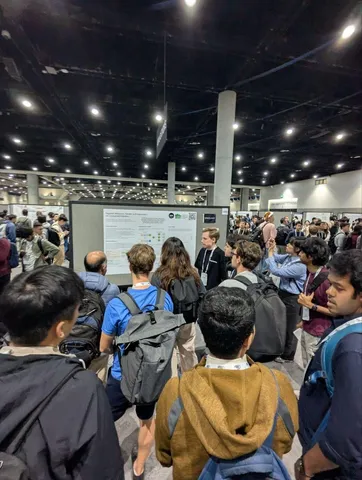
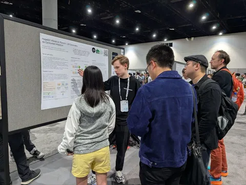
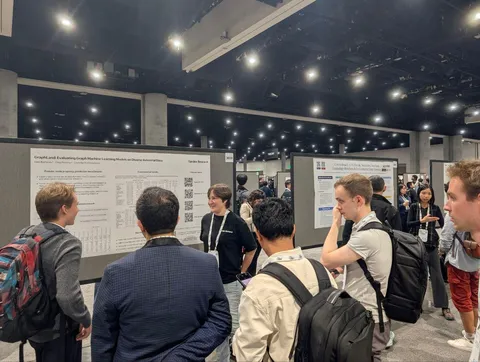
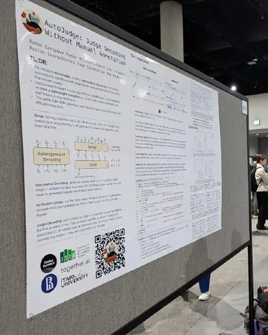
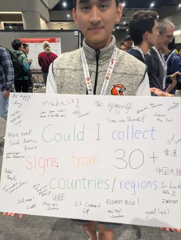
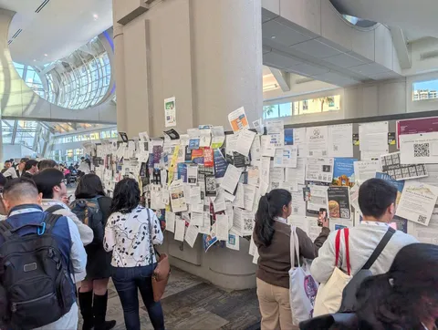

Команда Yandex Research активно участвует в постерных сессиях NeurIPS. На фото — Роман Гарипов и Людмила Прохоренкова отвечают на вопросы, поясняют нюансы и не упускают интересных обсуждений по следующим постерам:
Если захотите глубже погрузиться в работы, рекомендуем обзор наших статей, принятых на конференцию в этом году.
Напоследок два бонуса.
— Один из самых милых постеров сессии: участник собирал подписи и пожелания из 30+ стран. Похоже, план выполнен!
— Джоб-борд для нетворкинга: научные идеи не отходя от кассы превращаются в офферы.
#YaNeurIPS25
ML Underhood
